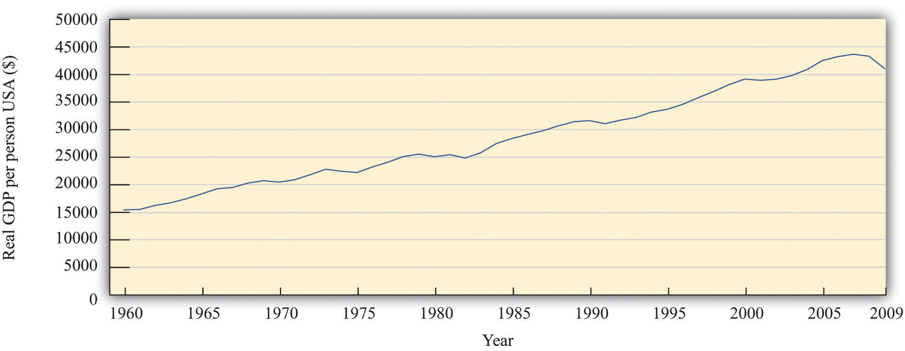
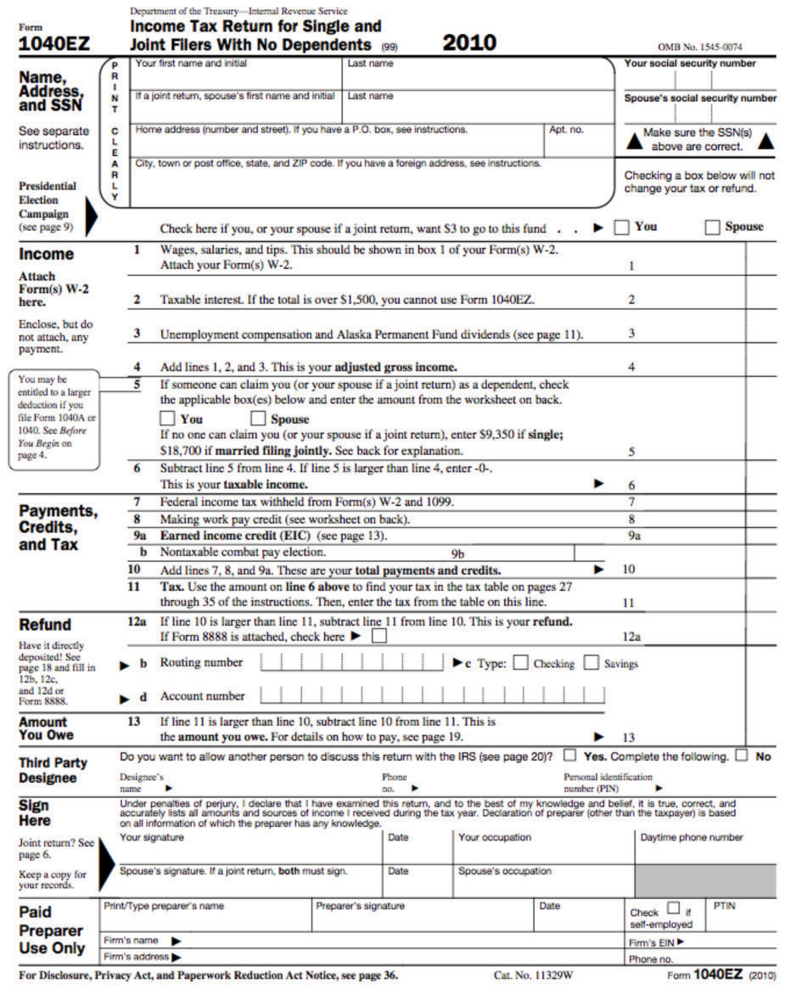

After you have read this section, you should be able to answer the following questions:
Let’s look at Figure 3.1 again in a bit more detail.
The top two panels in Figure 3.1 provide information on some key indicators of the state of the economy. The announcement from the Bureau of Economic Analysis (BEA) concerns one of the most closely watched indicators of the macroeconomy: real gross domestic product (real GDP). This is a measure of the goods and services produced by an economy in a year. We discuss real GDP in every macroeconomic application in this book.
Figure 3.3 Real GDP per Person in the United States, 1960–2009
Source: Alan Heston, Robert Summers, and Bettina Aten, Penn World Table Version 7.0, Center for International Comparisons of Production, Income and Prices at the University of Pennsylvania, May 2011.
Figure 3.3 "Real GDP per Person in the United States, 1960–2009" shows real GDP per person (often called real GDP per capita) from 1960 to 2009. Pictures like this one show up all the time in newspapers, in magazines, on television, or on the Internet. One of the things you will learn in your study of macroeconomics is how to interpret such economic data. We devote an entire chapter to understanding exactly how real GDP is measured. For now, we draw your attention to some details to help you appreciate what the graph means.
The horizontal axis indicates the year. Real GDP per person is shown on the vertical axis. To read this graph, you would look at a particular year on the horizontal axis, such as 2000, and then use the curve to see that the real GDP per person in 1965 was about $39,000.
If you look at this picture, the single most notable thing is that real GDP per person has been increasing. It was about 2.6 times larger in 2009 than in 1960. This tells us that, on average, the typical individual in the United States was 2.6 times richer in 2000 compared to 1960. The increase in GDP is not caused by the fact that there are more people in the economy because the figure shows GDP per person. The increase in GDP is not because prices are going up: the word real in this discussion means that it has been corrected for inflation.In the bottom right of the picture, you can see the phrase Data in 1996 dollars. This means that the numbers in the table are based on how much a dollar would have bought in 1996. Do not worry if you do not understand exactly what this phrase means right now. Chapter 18 "The State of the Economy" will provide much more detail.
Another thing you can see from the picture is that the growth of the economy has not been smooth. Sometimes the economy grows fast; sometimes it grows more slowly. Sometimes there are even periods in which the economy shrinks rather than grows. From this figure, you can see that real GDP per person decreased in the mid-1970s, the mid-1980s, and most notably in 2008 and 2009. During these times, people were becoming poorer on average, not richer.
We keep using the phrase on average. This reminds us that, even though the economy as a whole has been getting richer, the picture doesn’t tell us anything about how those gains have been shared across the economy. In fact, some people became a lot richer over this period, while many others saw only small gains, and some became poorer.
We see this uneven distribution very clearly when the economy shrinks. When that happens, one of the things we also observe is that more people in the economy are unemployed—that is, they are looking for a job but unable to find one. The burden of an economic downturn is borne disproportionately by those who lose their jobs.
Although this figure displays the history of the US economy over these 50 years, similar figures can be constructed for other countries around the world. They do not all look identical, but the pattern of uneven growth that we observe for the United States is one that we also see for most other countries. However, it is not true everywhere. We will also see examples of countries that have become poorer rather than richer in recent decades.
Real GDP is the most frequently watched indicator of economic performance. A second key indicator is the one in the top right screen of Figure 3.1: the inflation rate. The Bureau of Labor Statistics (BLS) collects information on prices on an ongoing basis; each month it releases information on how fast prices are changing. The rate at which prices are changing is the inflation rate. Other countries similarly have government agencies entrusted with gathering information about the inflation rate and other economic indicators.
It may seem that the job of the BLS is pretty easy: get information on prices and report it. Their task is, in fact, rather complex. In part, it is difficult because there are so many goods and services in the economy. So when we say that prices are increasing, we must decide which goods and services we are talking about. In addition, new goods appear, and obsolete goods disappear; the BLS must take this into account. And the quality of goods changes as well. If the price of a computer increases, is this an example of inflation or does it reflect an increase in the quality of the computer?
What are the implications of an inflation announcement? All else being the same, higher prices mean that we are unable to afford goods and services we were able to buy when prices were lower. But “all else” is not the same. Generally when prices increase, wages also increase. This means that the overall effects of inflation on our ability to buy goods and services are not self-evident.
Another implication of inflation is the policy response it elicits. The monetary authorities in the United States and many other countries are focused on ensuring that inflation does not get out of control. A report of inflation might therefore lead to a response by a monetary authority. Inflation affects us directly through the prices we pay and the wages we receive and indirectly through the policy response it induces.
Though not included in our screens, another significant variable also indicates the state of the macroeconomy: the rate of unemployment. The BLS (http://www.bls.gov/news.release/empsit.toc.htm) reports the unemployment rateThe number of unemployed individuals divided by the sum of the number employed and the number unemployed. on a monthly basis. It measures the fraction of people in the labor force who do not have a job. When real GDP is relatively high, then the unemployment rate tends to be lower than average, but when real GDP decreases, more people find themselves out of a job.
The top screens in Figure 3.1 provide information that flows to the policymakers in an economy. These policymakers carefully watch the state of the economy and then, if appropriate, take actions. The bottom screens in Figure 3.1 show policy in action.
For individuals and firms paying taxes in the United States, April 15 is an important day because tax forms are due for the previous calendar year. Each year US citizens fill out their tax forms and either make tax payments or receive reimbursements from the government.
The tax day differs across countries, but the experience is much the same everywhere: individuals and firms must pay taxes to the government. This is one of the key ways in which citizens interact with their governments.
A more complete version of the 1040EZ form for 2010 is shown in Figure 3.4 "Form 1040EZ".
Figure 3.4 Form 1040EZ
From the perspective of an individual filling out this form, the task is to get the data correct and determine exactly what figures go where on the form. This is no small challenge. From the perspective of economists working for the government, the tax form is an instrument of fiscal policy. Embedded in the tax form are various tax rates that must be paid on the different types of income you earn.
Where do these tax revenues go? The government collects taxes to finance its purchases of goods and services in the economy—such as roads, schools, and national defense—and also to make transfers to households, such as unemployment insurance.
The tax forms we fill out change each year, sometimes quite significantly. The tax rates households and firms confront are changed by governmental decisions. The government alters tax rates to affect the level of economic activity in the economy. It uses these tools when, in its judgment, the level of economic activity (as measured by real GDP, the unemployment rate, and other variables we will learn about) is insufficient. This is a delicate assessment that requires an understanding of the meaning and measurement of satisfactory economic performance and a deep understanding of how the economy works.
For example, consider the winter of 2008. Policymakers working in the White House and on Capitol Hill kept careful track of the state of the economy, looking as we just did at announcements from the BEA and the BLS on output and inflation. Eventually, they concluded that economic activity was not at a high enough level. They took actions to increase output by reducing taxes through the American Recovery and Reinvestment Act of 2009 (http://www.irs.gov/newsroom/article/0,,id=204335,00.html). The idea is as follows: when people pay less in taxes, they have more income available to spend, so they will purchase more goods and services. The link between the legislation and you as an individual is through tax forms like the one shown in Figure 3.4 "Form 1040EZ".
The bottom right screen in Figure 3.1 shows a decision of the Federal Open Market Committee (FOMC) to reduce a key interest rate by three-fourths of a percentage point to 2.25 percent. As we shall see in our study of monetary policy, a reduction in interest rates is a tool to increase economic activity. Lower interest rates make it cheaper for households and firms to borrow, so they spend more on goods and services. The FOMC action was taken on account of weak economic conditions in the United States, but its consequences were felt worldwide.
Other monetary authorities likewise look at the state of their economies and adjust their monetary policy. The following is part of a statement from the European Central Bank (ECB), the monetary policy authority for the European Union. It was part of a press conference held in April 2005 in which Jean-Claude Trichet, president of the ECB, and Lucas Papademos, vice president of the ECB, provided a statement about economic outlook for Europe and the stance of monetary policy.
All in all, we have not changed our assessment of risks to price stability over the medium term. So far, we have seen no significant evidence of underlying domestic inflationary pressures building up in the euro area. Accordingly, we have left the key ECB interest rates unchanged. Both nominal and real rates are at exceptionally low levels, lending ongoing support to economic activity. However, upside risks to price stability over the medium term remain and continued vigilance is therefore of the essence.
I shall now explain our assessment in more detail, turning first to the economic analysis. Recent data and survey indicators on economic activity have been mixed. In general they point to ongoing economic growth at a moderate pace over the short term, with no clear signs as yet of a strengthening in underlying dynamics.
Looking further ahead, the conditions remain in place for moderate economic growth to continue. Global growth remains solid, providing a favourable environment for euro area exports. On the domestic side, investment is expected to continue to be supported by very favourable financing conditions, improved profits and greater business efficiency. Consumption growth should develop in line with real disposable income growth. However, at the same time, persistently high oil prices in particular pose downside risks to growth.
[…]“Introductory Statement with Q&A,” European Central Bank, April 7, 2005, accessed June 27, 2011, http://www.ecb.int/press/pressconf/2005/html/is050407.en.html.
Statements such as this are reported in the business press and widely read. Businesspeople all over the world closely follow the actions of central banks. That is, the people interested in this statement by the ECB were not only European citizens but also individuals in the United States and other countries. Likewise, when the Fed takes action, the news shows up on televisions and computer screens across the world.
The ECB quotation mentions several key economic variables: inflation, real interest rates, nominal interest rates, economic activity, investment, exports, consumption growth, and real disposable income growth. These variables are also important indicators of the state of the economy, as we can tell from the fact that they play such a prominent role in the ECB assessment.
The economists at the ECB need to know the current state of the economy when deciding on what policies to pursue. But there are compelling reasons for others to care about these variables as well. Suppose, for example, that you are an investor contemplating an investment in Spain. Your interest is in making profit from producing a good in Spain and selling it in that country and others. The profitability of the investment in Spain depends on the overall state of the Spanish economy and its neighbors in the European Union who are the target group for your sales.
For you as an investor, the ECB statement contains vital information about the state of the European economy. It also contains information on the likely conduct of monetary and fiscal policy in Europe. These factors matter for you simply because they impact the profitability of your investment. Thus you want to understand the statements from the ECB, starting with the definitions of key macroeconomic variables.
By now, you may well have a number of questions. What exactly are these monetary authorities in Europe and the United States? Where do they come from and what are their powers? How exactly do their actions have so much influence on our lives? Answering these questions is one of our tasks in this book. We devote two full chapters to the determination and the influence of monetary policy in the economy.